Create / Edit Stock items - BOM (Production)
BOM (Production) stock item type
The BOM (Production) stock item type is used when you are selling stock items or products that consist of various other stock items (components) and services. This allows you to link existing physical and non-physical stock items to create a finished product.
Manufacturing and BOM (Production) Stock Item Type
The Manufacturing process would specifically apply to the BOM (Production) stock item type. This is because BOM (Production) includes features that are essential for manufacturing processes, such as the ability to assemble and disassemble products. Here’s a detailed explanation:
BOM (Production) Stock Item Type and Manufacturing:
- Manufacturing Focus: BOM (Production) is designed to handle the manufacturing process where components and services are combined to create finished products.
- Assembly: Allows for specifying and combining quantities of various components to form a finished product. This reflects the manufacturing process of creating new products from raw materials or parts.
- Disassembly: Enables breaking down finished products back into their individual components, which can be necessary for various manufacturing and inventory management scenarios.
- Inventory Management: Tracks the usage and adjustments of components and finished products, ensuring accurate inventory control during manufacturing operations.
Conclusion:
- BOM (Bills of Materials): Generally used for tracking and managing items that consist of various components and services.
- BOM (Production): Specifically tailored for manufacturing processes, providing features to assemble and disassemble items, crucial for creating and managing finished products from various components.
Therefore, the Manufacturing process applies specifically to the BOM (Production) stock item type due to its specialized features for handling the complexities of production.
Instructions for BOM (Production) Stock Item Type: Assemble / Disassemble
Before you proceed with the assembly or disassembly of BOM (Production) stock items, you need to perform the following preliminary steps:
Add Stock items as BOM (Production) stock item type
Add Stock items as BOM (Production) stock item type: On the BOM tab of the BOM (Production) stock item type, add or the link existing physical and non-physical stock items to create a finished product on the BOM list. On the BOM tab, you need to configure to recalculate the base (on cost price or selling price). You may also recalculate the sales percentage.
Select a BOM (Production) Contra Account
The BOM (Production) stock item type, will add the Assembly and Disassembly features as context menu options which include the ability to:
- Assemble: Specify and combine quantities of components to create finished items.
- Disassemble: Specify and break down quantities of finished items back into components.
The Assemble and Disassemble context menu options will process transactions to the "BOM (Production) Contra account" will record the transactions when the you:
- Assemble: Specify and combine quantities of components to create finished items from the BOM. This will debit the "BOM (Production) Contra account" and credit the "Stock control account" .
- Disassemble: Specify and break down quantities of finished items from the BOM list back into components. This will debit the "Stock control account" and credit the "BOM (Production) Contra account".
|
|
If the BOM (Production) contra account is not selected, the system will display an information message: "Please setup production contra account in Stock setup." |

To select the BOM (Production) contra account, navigate to Setup → Stock information and select the ledger account.
|
|
You will not be allowed to specify the re-order level and select the Cost of sales, Stock control and Input Tax accounts. |
Create (Add) stock items for Bills of Materials - Production (BOM (Production)
To create a stock item for Bills of Materials - Production (BOM (Production):
- On the Default ribbon, select Stock items (F12).
- Click on the New button. A blank Stock form will be displayed.
- Select the "BOM (Production)" stock item type. The Stock entry form is displayed as follows:

- Enter the Stock code, Description, Barcode, Manufacturer and Extra description as required.
- Select the Unit size.
- Apply invoice discount - This is applicable to debtor (customer / client) accounts, as the percentage customer discount is specified on the Accounting information tab - Debtors (Default ribbon).
- Reports - Stock group 1 / 2 - The reporting group to which you wish this Stock item to be allocated.
- Preferred supplier 1 - Optional - Select a creditor (supplier / vendor) account and enter a supplier stock code if applicable.
- Preferred supplier 2 - Optional - Select a creditor (supplier / vendor) account and enter a supplier stock code if applicable.
- Click on the Ledger tab, if not already displayed.
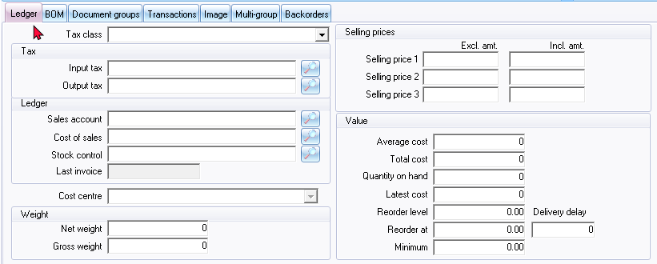 - Enter or select the following options:
- Tax class - If you have created tax classes, select the tax class. The Tax class will automatically add the Input Tax and Output Tax accounts in the Tax section, the Sales account, Cost of sales and Stock control accounts in the Ledger section.
- Last invoice - Field inactive. The date of the last purchase or other document generated on which the Stock item was selected. This field will not display any date if it is a new item, or if no Stock items have been selected on any documents.
- Default cost group - This is by default inactive. If you have created and activated cost centres, these may be selected.
- Weight
- Gross weight - Enter, if applicable.
- Net weight - Enter, if applicable.
- Selling prices - Enter the Selling price 1/2/3 exclusive or inclusive of Tax. The inclusive of VAT/GST/Sales Tax will be calculated based on the percentage entered in your Output Tax account. (if you selected that account in advance).
|
|
This description should reflect your selling price descriptions as you have entered in Setup → Stock information. |
|
|
If you have for example entered: "Retail", "Wholesale" and "Cash" for these Selling prices, the Selling price 1 / 2 / 3 will be respectively displayed as such. |

|
|
The amounts as entered in these fields will be displayed on Invoices, Credit notes and Quotes. When the cursor is displayed on the Amount fields, you may select any of the available selling prices you wish to charge your debtors (customers / clients). |
- Values
- Average cost - Field inactive. The average cost price of your Stock item cannot be entered at this stage. When you process purchases, the Average cost Price will be automatically updated.
- Total cost - Field inactive. The total cost price of your Stock item cannot be entered at this stage. When you process purchases, the Total cost price will be automatically updated.
- Quantity on hand - Field inactive. The quantity, or number of Stock items on hand, cannot be entered at this stage. When you process purchases, the quantities will be automatically updated.
- Latest cost - The latest cost price of your Stock item can now be entered. When you process purchases, the Latest cost Price will be automatically updated.
- Reorder level - The minimum level of stock that you wish to keep on hand for this Stock item. In the case of Stock item codes for the purchase of services, this field should be left blank.
- Reorder at - Specify the quantity of stock to be available when you need to reorder stock.
- Minimum - Specify the minimum quantity of stock to be on hand.
- Delivery delay - To be advised.
- Click on the BOM tab, if not already displayed.
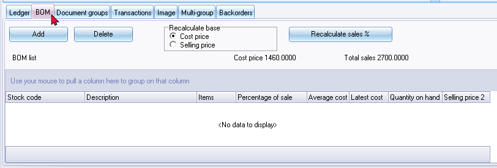 - Click on the Add button to select an item on the Stock item lookup. Repeat this process until all the items (components) have been added to the list.
|
|
If more than 1 Stock item is included in the finished product, you need to enter the quantities to be included in the finished product. |
|
|
To delete (remove) an item from the BOM List, select the item on the list and click on the Delete button. |
- Once you have added the BOM items to the list, enter the quantities of the components for each item. The values in the Average cost, Latest cost and Quantities on Hand fields will automatically be displayed for each stock item. The total Cost price value will also be automatically calculated (sum of the number of items x cost price for each item).
- Select Cost price or Selling price option in the Calculate Base field. Click on the Recalculate Sales % button. This will calculate the Percentage of Sales for each item on the BOM List.
- Click on the Save button to save this stock item. The "Stock item - List view" (default) screen will be displayed.
BOM (Production) Assemble / Disassemble
Before you may process the assemble / disassemble options for the "BOM (Production)" stock item, you need to add the stock items and do some basic settings.
Select a BOM (Production) contra account
|
|
If the BOM (Production) contra account is not selected, an information message is displayed: "Please setup production contra account in Stock setup." |
Add a BOM (Production) contra account in Setup → Stock information.
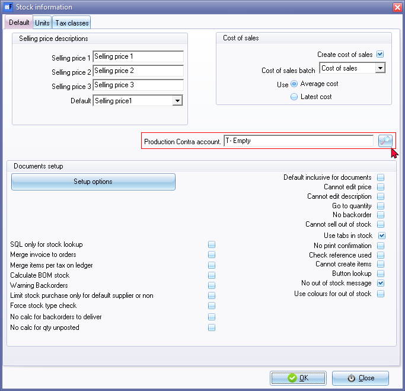
Add the stock items
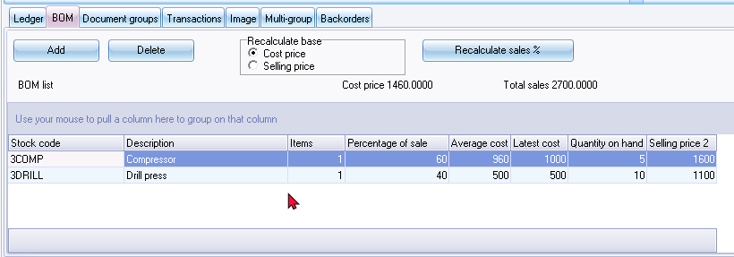
Assemble and Disassemble BOM (Production) stock item type
Once this you have finished adding and configuring your items (products) pm the BOM tab, you may select the "Assemble" or "Disassemble" on the context menu for the "BOM (Production)" stock item type.
IMPORTANT : This will automatically generate a document and post (update the ledger) the transactions based on your configuration, for the items (products) on your BOM list.

Assemble BOM (Production) item
To assemble BOM (Production) item:
- Select the "BOM (Production)" item on the "Stock item" grid.
- Right-click on a selected stock item (BOM (Production) stock item type) and select the "Assemble" option on the context menu. The "Quantity" screen is displayed:
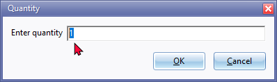 - Enter the quantity and click on the OK button. The confirmation screen will list the details of the assembly:
Processing lvl 0 BOMPRODUCTION BOM (Production)
Processing lvl 1 3COMP Compressor
Processing trans qty:5 3COMP Compressor
Processing lvl 1 3DRILL Drill press
Processing trans qty:5 3DRILL Drill press
Processing trans qty:-5 BOMPRODUCTION BOM (Production)
Processing costofsale:5 BOMPRODUCTION BOM (Production)
Processing costofsale:5 BOMPRODUCTION BOM (Production)
Processing costofsale:5 3COMP Compressor
Processing costofsale:5 BOMPRODUCTION BOM (Production)
Processing costofsale:5 3DRILL Drill press
- Click OK to update quantities to BOM (Production) stock item and post transactions. A posted document with prefix 'SA' (e.g., 'SA00001') will be generated for "Assemble".
Disassemble BOM (Production) item
Once you have assembled items, you may disassemble quantities.
To disassemble BOM (Production) item:
- Select the"BOM (Production)" item on the "Stock item - List view" (default) screen.
- Right-click and select the "Assemble" option on the context menu. The "Quantity" screen is displayed:
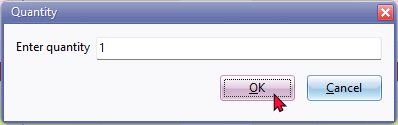
- Enter the quantity and click on the OK button. The confirmation screen will list the details of the disassembly:
Processing lvl 0 BOMPRODUCTION BOM (Production)
Processing lvl 1 3COMP Compressor
Processing trans qty:1 3COMP Compressor
Processing lvl 1 3DRILL Drill press
Processing trans qty:1 3DRILL Drill press
Processing trans qty:-1 BOMPRODUCTION BOM (Production)
Processing costofsale:1 BOMPRODUCTION BOM (Production)
Processing costofsale:1 BOMPRODUCTION BOM (Production)
Processing costofsale:1 3COMP Compressor
Processing costofsale:1 BOMPRODUCTION BOM (Production)
Processing costofsale:1 3DRILL Drill press
- Click OK to update quantities to BOM (Production) stock item and post transactions. A posted document with prefix 'SA' (e.g., 'SA00001') will be generated for "Disassemble".
BOM (Production) Document groups / Transactions tabs
The "Assemble" and "Disassemble" functions for BOM (Production) items create posted documents. These transactions will be listed under the Document groups tab and the Transactions tab.
Documents generated by these functions will have a document prefix "SA" (e.g., "SA00001"), using a similar 7-digit format.
BOM (Production) Document Groups Tab
The Document Groups tab for BOM (Production) stock items shows documents related to assembly and disassembly. These documents are automatically posted when you perform the Assemble and Disassemble actions.
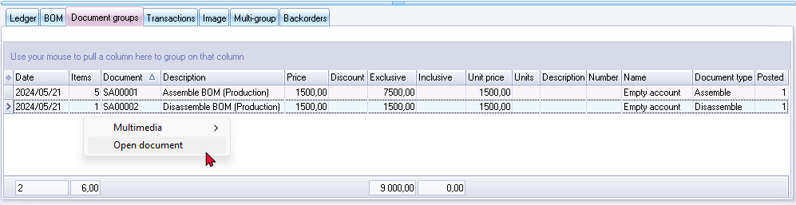
On the Document groups tab, you can:
- Print a document: Double-click on the document to print it.
- Open a posted document: Right-click on the document and select "Open document" from the context menu.
BOM (Production) Transactions Tab
The Transactions tab includes posted documents generated by the assembly and disassembly of BOM (Production) items.
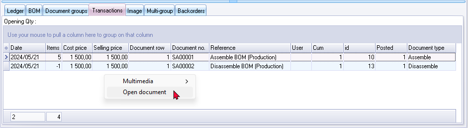
On the Transactions tab, you can:
- Open a posted document: Right-click on the document and select "Open document" from the context menu.
By following these instructions, you can efficiently manage and review the documents and transactions related to the assembly and disassembly of BOM (Production) items.
Viewing Posted Documents for BOM (Production) Items
Opening a Posted document
On the BOM (Production) Document groups and Transactions tabs, you can open posted documents generated by the "Assemble" and "Disassemble" functions as follows:
- Right-click on the desired document.
- Select "Open document" from the context menu.
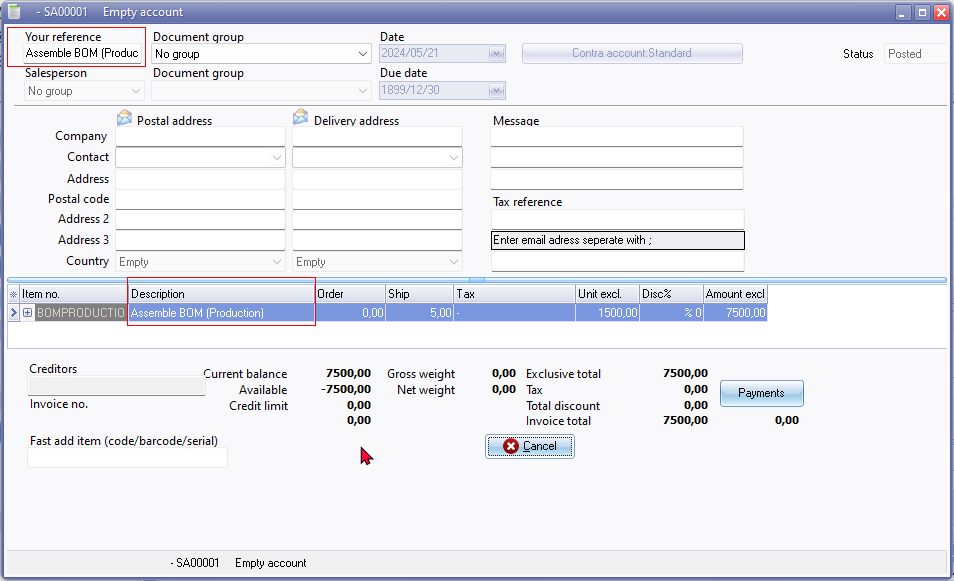
Identifying the Document type
- The "Your reference" field and the "Description" column in the posted document will indicate whether the document was generated using the "Assemble" or "Disassemble" options for BOM (Production) items.
- Documents generated by these functions will have a document prefix "SA" (e.g., "SA00001"), using a similar 7-digit format.
By using these steps, you can easily access and identify the specific documents related to the assembly and disassembly of BOM (Production) items.
Print a Posted document
You may print selected posted document generated by the "Assemble" and "Disassemble" of BOM (Production) items from the following options:
- BOM (Production) - Document groups tab : (Double-click to print).
- Search (central search) : Locate these posted document generated by the "Assemble" and "Disassemble" of BOM (Production) items. (Double-click to print).
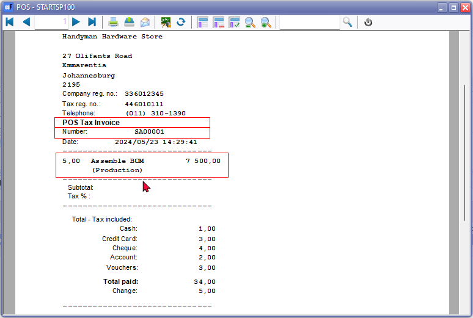
The "POS Tax Invoice" will print the correct document number, but will print the system date and time stamp of your operating system and not the actual transaction date.
|
|
The default document layout file which will be used to print documents generated by the "Assemble" and "Disassemble" of BOM (Production) items, is the "Layout file point-of-sale" selected in Setup → Documents setup. WARNING: Point-of-sale document layouts might not be ideal for printing "Assemble" and "Disassemble" documents for BOM (Production) item types due to:
Recommendation: Select a different document layout file for BOM (Production) transactions (Setup → Documents setup). 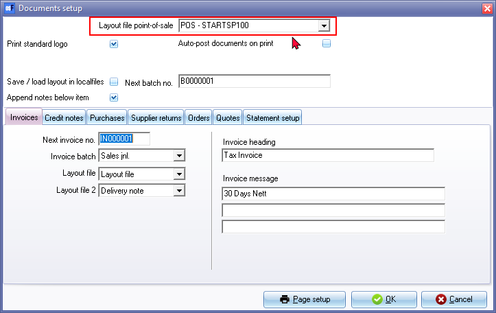 NOTE: Selecting the document layout files, which supports the "TYPES.SDESCRIPTION" document name from the "TYPES" table, will print the document name as "Delivery note" for "Assemble" option and "Remittance" for "Disassemble" option. Selecting the following document layout files, will replicate the document names:
Recommendation: You may select the BOM (Production) Layout file (TRN_3266) for the Stock item type to print layout files generated during "Assembly" or "Disassembly". Document prefix: "SA" (e.g., "SA00001"), with a similar 7-digit format. Example : Assemble 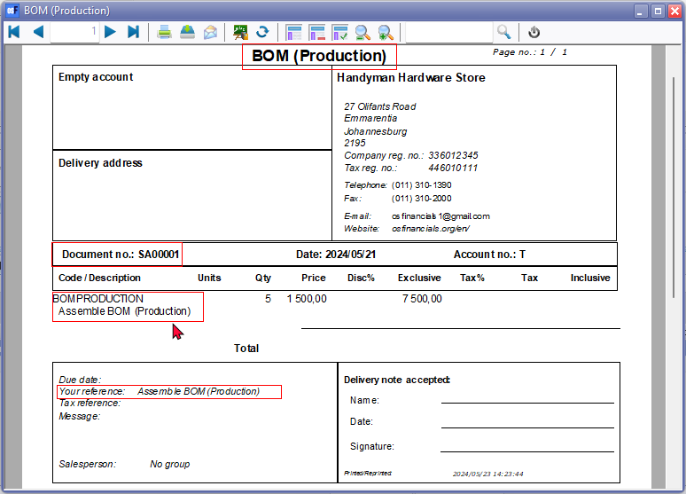 Delivery note accepted: in SubReport-1(TAX) - Changed label TRpExpression85 to print BOM (Production accepted :) CUSTOM('GETTEXTLANG',3266,'BOM(Production',CLIENTORDEFLANG.SLANGUAGE,0,0)+' '+(CUSTOM('GETTEXTLANG',906275,'Accepted',CLIENTORDEFLANG.SLANGUAGE,0,0)+(': ')) 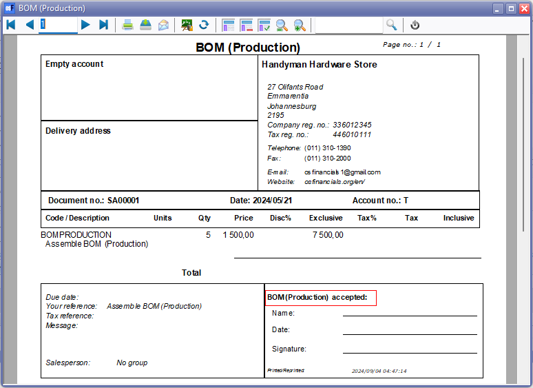 Example : Disassemble 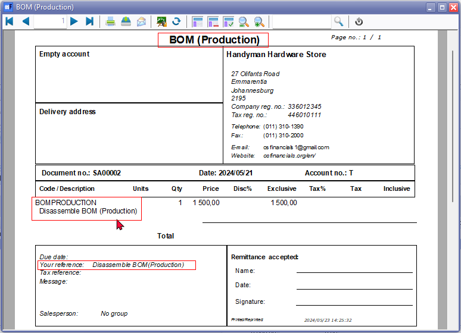 Remittance accepted: in SubReport-1(TAX) - Changed label TRpExpression85 to print BOM (Production accepted :) CUSTOM('GETTEXTLANG',3266,'BOM(Production',CLIENTORDEFLANG.SLANGUAGE,0,0)+' '+(CUSTOM('GETTEXTLANG',906275,'Accepted',CLIENTORDEFLANG.SLANGUAGE,0,0)+(': ')) 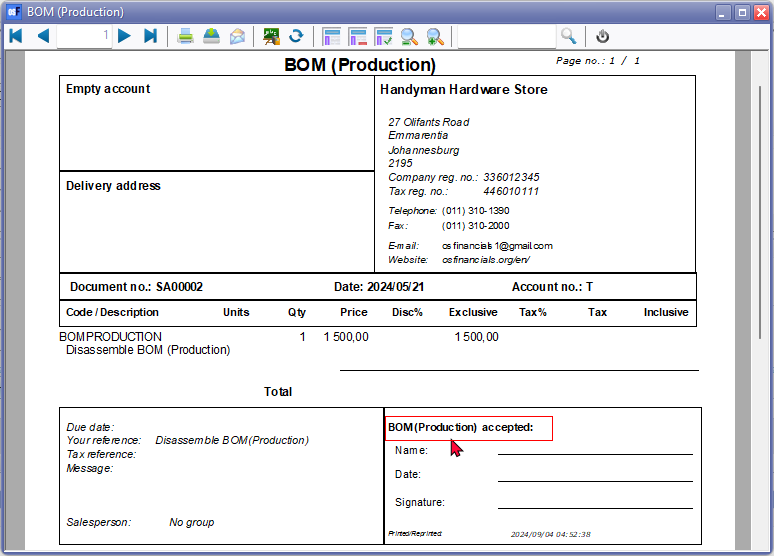 |
Viewing BOM (Production) Transactions
The transactions generated by assembling and disassembling BOM (Production) items are posted to the "BOM (Production) Contra account" as configured in Setup → Stock Information.
These transactions are recorded in the ledger and can be viewed through various reports and tools. Here’s how you can view, print, and export these transactions:
- Reports Menu: To view these transactions, navigate to the Reports menu and select Reports → Ledger → Transactions. You can choose from the following reports:
- Transactions
- Transactions - Standard
- Transactions - Extra details
- Batch entry: Cost of Sales journal: Open the Batch entry (F2) and select Cost of Sales journal. In the Cost of Sales journal, click on the posted batches tab and select the batch. You can print the transactions in the "Batch type report - Posted batch".
- T-Account Viewer: Access the T-Account viewer and select the "BOM (Production) Contra account". This allows you to view, print, and export the transactions.
- Ledger Analyser: Alternatively, you can print a Trial Balance in Ledger Analyser 1 or Ledger Analyser 2. Double-click on the desired account or use the "Show details" option from the context menu to view detailed transactions.
- Central Search: To locate specific assemble or disassemble transactions or document numbers. In the search results, double-click on the Batch type to display the transactions in the T-Account viewer.
Example : Ledger transactions - BOM (Production) Contra account
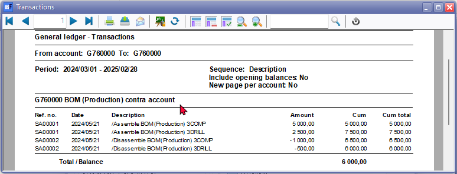
|
|
BOM (Production) - Assemble and Disassemble options will automatically generate transactions, which is posted to the ledger. The Document no. for a BOM (Production) - Assemble and Disassemble options is automatically generated as a seven-digit number (consisting of a prefix SA followed by 5 numerical digits). The Document type is "Assemble" or "Disassemble" |
Example : Batch type report - Posted batch - BOM (Production) Batch transactions
Open the Batch entry (F2) and select Cost of Sales journal. In the Cost of Sales journal, click on the posted batches tab and select the batch.
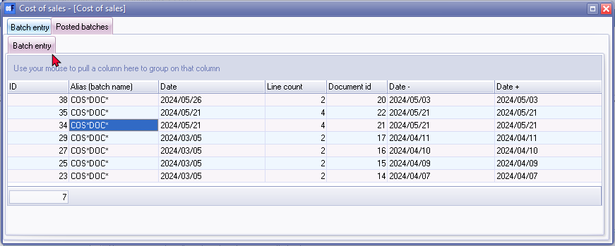
Click the Print button to print the transactions in the "Batch type report - Posted batch".
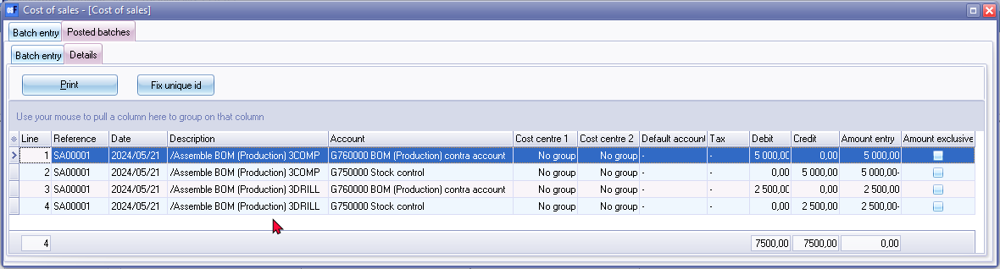
Example : Batch type report - Posted batch report - Assemble transactions
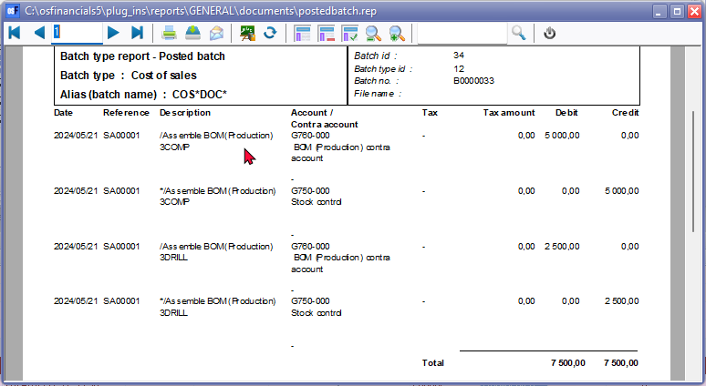
Example : Batch type report - Posted batch report - Disassemble transactions
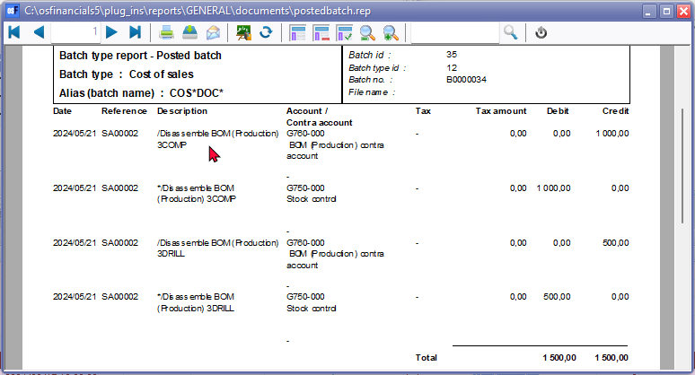
T-Account viewer
In addition to the transaction reports on the Reports menu; you may view, print and export transactions in the T-Account viewer from the following options.
- T- Account viewer : On the reports menu, select the T-Account viewer icon and select the "BOM (Production) Contra account".
- Alternatively, you may print a Trial balance in the Ledger analyser 1 / Ledger analyser 2 and double-click or use the "Show details" option on the context menu.
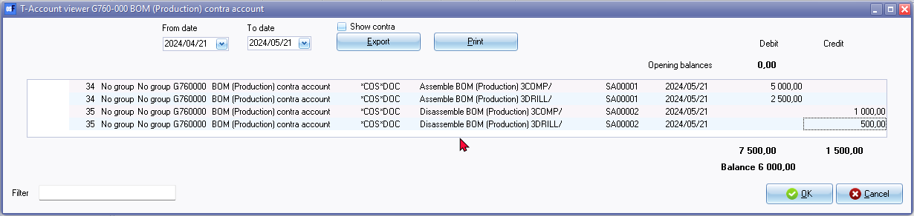
You may filter the transactions by batch number, e,g, "34" or "35".
Click on the Print button to print a T-account view of the transactions.
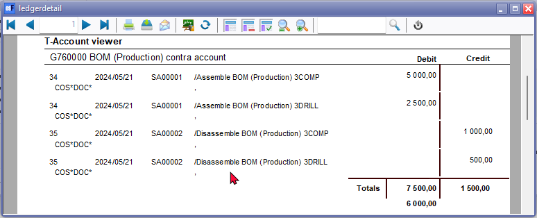
Should you wish to export these transactions to a spreadsheet click Export. If you need to include Contra accounts, in your spreadsheet, select the "Show contra" option
Search (Central search)
To locate specific assemble or disassemble transactions or document numbers:
- Search for keywords such as "assemble", "disassemble", or document numbers starting with "SA".
- In the search results, double-click on the "Batch" type to display the transactions in the T-Account viewer.
- To print a document, double-click on a document for the "Document" type.
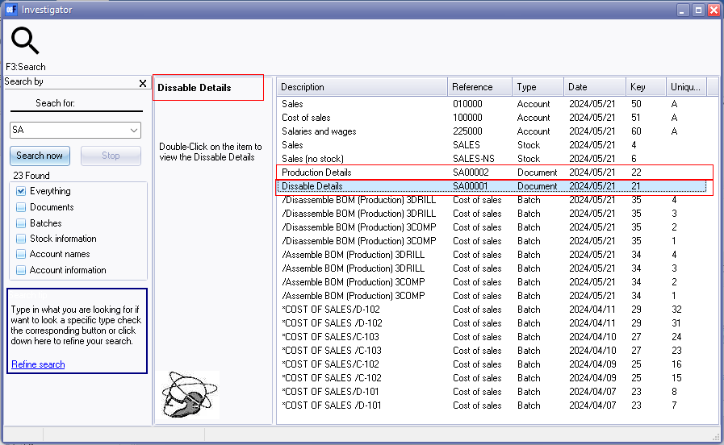
NOTE: On the Search (central search), the "Description" column for the "Document" type, is indicated as follows:
- Dissable Details - Should be "Production Details" since the document e.g. "SA00001" is created using the "Assemble" option. The document type is listed as "Assemble" on the Document groups and Transactions tabs of the stock item for the BOM (Production) stock item type.
- Production Details - Should be "Disassemble Details" since the document e.g. "SA00002" is created using the "Disassemble" option. The document type is listed as "Disassemble" on the Document groups and Transactions tabs of the stock item for the BOM (Production) stock item type.
Search Description Inaccuracy:
- Central Search shows "Dissable Details" for "Assemble" documents (e.g., "SA00001"). This should be "Production Details".
- Conversely, "Production Details" are shown for "Disassemble" documents (e.g., "SA00002"). This should be "Disassemble Details".
Correct Descriptions:
- "Assemble" documents: Use "Production Details".
- "Disassemble" documents: Use "Disassemble Details".
These descriptions are consistent with the document types listed on the stock item's "Document groups" and "Transactions" tabs (BOM (Production) stock item type).